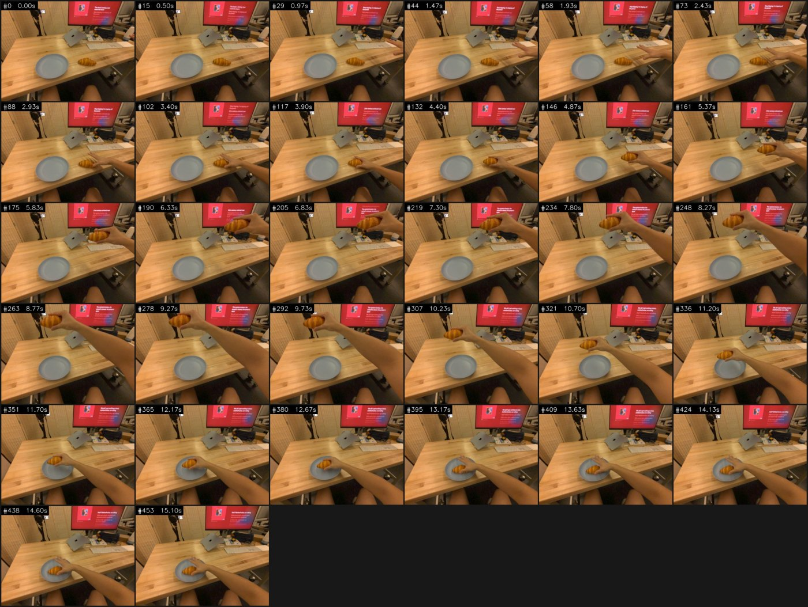
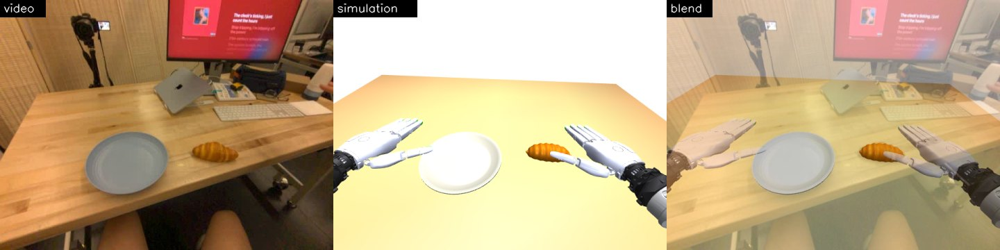

From one human video to a robot simulation
The four DexAgent stages, each run by an LLM agent with a tool library and judged by independent verifiers. Every artifact below is the actual output of this run.
Human demonstration
inputHumanEgo serve_bread episode 040 — Aria glasses, 15.1 s, right hand. Converted to DexAgent's EgoDex format:
per-frame head-camera pose (MPS SLAM) and the 3D hand skeleton (MPS hand tracking) — the head moves only 2 cm / 3°.
Semantic understanding
passed
The agent reads the video through contact sheets and writes scene_semantics.json: two rigid objects and three subgoals with measurable goals.
Property-based reconstruction
passed
SAM 3 masks, the EgoDex camera, then objects built by library skills and placed where the video shows them on the Tianji bench. The croissant needed a shape no skill had: the agent wrote and tested a new one.
Robot trajectory generation
passedGrasp synthesis, 7-DOF arm IK, and execution in contact physics with motor-torque arms and position-servoed fingers. The human's whole-hand wrap did not survive the static screen; the agent converged on a top-down thumb–index pinch over the croissant's centre of mass and removed a 30–85 N release spike by tracing six finger-geometry causes.
Robot data generation
running at scaleDexAgent Stage 4 re-draws the object layout (here ±7 cm, ±35°), anchors each hand segment to the object it acts on, re-solves the arm, and keeps a layout only if a full contact-physics replay passes every subgoal check. The accepted episodes are rendered from the robot's ZED and wrist cameras with domain randomization — see Generated data.
The agent at work
Rounds, tool calls and verifier verdicts per stage, for the original (right-arm) and the mirrored (left-arm, real-rig) runs. No API key: a Claude subagent answered DexAgent's own harness through its file transport.
Self-evolving tool library
Tools the agent created and tested through library_create during these runs; they are now part of the library.
Generated data
Every episode is a physics replay that passed DexAgent's checks; each is rendered twice with a different appearance draw. ZED 2i (robot head) + wrist camera, 640×480 @ 15 fps, with depth, 58-joint states and actions, hand and object poses, phase labels.
Start layouts
Croissant start rotation
Final distance to plate centre
Action → next state
# one episode of datasets/serve_bread_040_tianji/ ep_shard_01_0007_r0/ ego.mp4 # ZED 2i, 640x480 @ 15 fps wrist_right.mp4 # wrist camera of the acting hand depth_ego.npz # uint16 depth (mm) data.npz # qpos/qvel/action [T, 58] by joint name (14 arm + 44 hand), ee/* and object/* poses, labels meta.json # source sample + layout, randomization draw, camera intrinsics/extrinsics, instruction
Photoreal robot-camera data
The same physics-verified episodes re-rendered with Blender Cycles from the robot's ZED and wrist cameras: PBR robot (white satin paint, black anodised wrist, graphite torso, rubber fingertip pads), a glazed ceramic plate in the colour measured from the human video, a baked-crust croissant with subsurface scattering and a contact dent where the fingers press, real indoor HDRI rooms or a studio cyclorama. The robot stays exactly where the physics put it.
Same frames, three renderers
Photoreal episodes
ZED 2i + wrist, 640×480, with depth and the full state/action streams (same format as the fast dataset); every appearance knob drawn per episode.
Agent-designed diversity
An agent decides which axes of variation matter for the task and how wide each may be, then every draw is rebuilt and re-verified in contact physics.
The spec the agent wrote
What survived physics
Diverse episodes
Each with its own instruction, bread, plate, table height, grasp, motion and speed — and the look the designer drew for it (table finish, lamp colour temperature and direction, room colour, ZED offset).
All 71 diverse samples
Photoreal composites
DexAgent's own Stage 4 render path: Blender Cycles renders of the robot and objects composited onto the human video's clean background plate, plus the wrist and ZED views.
Porting DexAgent to our rig
DexAgent ships for a 6-DOF YAM bench; everything needed for a 7-DOF Tianji torso with SharpaWave hands and a ZED head camera.
Aria → EgoDex
MPS SLAM poses rotated z-up → y-up, the 21 MPS hand landmarks mapped to the 25 ARKit joints. A mirrored copy turns the right-hand demo into a left-hand one for the real rig.
Tianji + Sharpa + ZED
Generated from far_dexbot.urdf: arms in DexAgent's naming, the hand clocked 180° on the flange as on the real robot, the ZED from the hand-eye calibration, home pose by IK.
7-DOF arms
Motor caps 108/108/66/66/18/18/18 N·m, gains and inertias from the setup; a computed-torque feed-forward removes the 18–80 N contact spikes the heavy arm caused; MPC/RL residuals sized per arm.
Robot-camera renders
Stage 4 samples rendered from the ZED and wrist with MuJoCo (ms per frame) and domain randomization; Cycles composites for the photoreal subset; a clean plate without VOID.